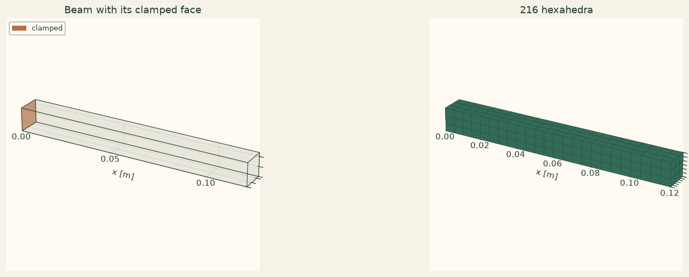

Docs › Examples › Natural frequency of a cantilever
Solid mechanics · 3D
Natural frequency of a cantilever
The fundamental bending frequency of a clamped beam, graded against Euler-Bernoulli theory.
Run locally with OneSimulation. The example downloads are free. Running them requires an activated runtime. Runtime Alpha 0.2.1a7 · CPython 3.13 on macOS (Apple Silicon), Ubuntu 22.04 (x86-64), and Windows x64. Installation and activation · View pilot plans. Scope of the reference checks.

What it computes
The beam is read from a STEP file with named faces and meshed with hexahedra. OneSimulation runs a modal analysis on the linear-elastic beam and returns its natural frequencies.
What it checks
The fundamental frequency matches f_1=(beta_1^2/2pi) sqrt(E I/(rho A L^4)) within about 0.2 %.
Geometry
The notebook starts at the import of the CAD file cantilever_natural_frequency.step: STEP (AP242), readable by any CAD program, with the names of the faces that the boundary conditions use. Put it next to the notebook.

The geometry script
The script cantilever_natural_frequency_geometry.py builds the geometry with the CAD objects of OneSimulation and writes the file. Change a dimension there, run it, and run the notebook again.
"""Geometry of the OneSimulation example "Natural frequency of a clamped beam".
Builds the beam, 120 mm long with a square 12 mm cross-section, with the CAD objects of
OneSimulation and writes cantilever_natural_frequency.step. The faces keep their names x_min,
x_max, y_min, y_max, z_min and z_max in the file.
"""
from onesim.cad.d3 import Box
beam = Box(length=0.120, width=0.012, height=0.012)
beam.save("cantilever_natural_frequency.step")The notebook
The complete notebook, cell by cell. Run it to produce the figures and the comparison printout.
A prismatic beam (length \(L\), square cross-section \(b\times h\)) is fully clamped on the left and free on every other face. It comes from the CAD file cantilever_natural_frequency.step with the face names x_min to z_max; the script cantilever_natural_frequency_geometry.py builds it with the CAD objects of OneSimulation. OneSimulation assembles the 3D linear-elastic stiffness and mass operators on quadratic hexahedra and solves the generalised eigenproblem \(K\boldsymbol\phi=\omega^2 M\boldsymbol\phi\) for the natural modes and frequencies.
Reference. Euler-Bernoulli beam theory gives the bending natural frequencies
with \(\beta_1=1.875104\) for the first clamped-free mode. Beam theory neglects shear deformation and rotary inertia and is therefore an approximate target value for a three-dimensional solid of finite slenderness.
import numpy as np
from onesim.cad.exchange import load
from onesim.materials import IsotropicSolid
from onesim.meshing import CadHexahedralMesher
from onesim.numerics import Numerics
from onesim.numerics.fem import FiniteElement, Lagrange
from onesim.numerics.linear import SparseDirect
from onesim.physics.solid_mechanics import (
FixedDisplacement,
LinearElasticity,
TractionFree,
structural_modes,
)
from onesim.simulation import Problem, Simulation
from onesim.visualization import plots, theme
theme.set()Geometry and mesh
beam = load("cantilever_natural_frequency.step")
faces = beam.boundaries
length, side, _ = beam.size
mesh = CadHexahedralMesher(cells=(24, 3, 3)).generate(beam)
fig = plots.figure(1, 2, size=(14, 4.5))
plots.geometry(
beam,
selection={"clamped": faces.x_min},
labels=False,
title="Beam with its clamped face",
ax=fig[0],
)
plots.mesh(
mesh, groups=("all",), legend=False, title=f"{mesh.cell_count} hexahedra", ax=fig[1]
)
plots.show()Model
youngs_modulus, density = 210e9, 7850.0
steel = IsotropicSolid(
density=density,
specific_heat_capacity=460.0,
thermal_conductivity=50.0,
youngs_modulus=youngs_modulus,
poisson_ratio=0.30,
thermal_expansion_coefficient=12e-6,
)
model = LinearElasticity(domain=beam.volume, material=steel)
problem = Problem(
name="Clamped beam natural modes",
geometry=beam,
physics=(model,),
boundary_conditions=(
FixedDisplacement(boundary=faces.x_min, physics=model, value=(0.0, 0.0, 0.0)),
TractionFree(boundary=faces.all - faces.x_min, physics=model),
),
)
numerics = Numerics(
spatial=FiniteElement(element=Lagrange(order=2)), linear_solver=SparseDirect()
)
result = Simulation(problem=problem, mesh=mesh, numerics=numerics).solve_stationary()Modal analysis and comparison with beam theory
The square cross-section makes bending about the two transverse axes degenerate, so the first two computed frequencies form one bending pair.
modes = structural_modes(result, model, mode_count=4)
beam_theory = (
1.875104**2
/ (2 * np.pi)
* np.sqrt(youngs_modulus * side**4 / 12 / (density * side**2 * length**4))
)
print(
f"fundamental frequency: simulation {modes.frequencies[0]:.2f} Hz, Euler-Bernoulli {beam_theory:.2f} Hz, "
f"deviation {100 * (modes.frequencies[0] / beam_theory - 1):+.2f} %"
)
print("first four frequencies [Hz]:", [round(f, 2) for f in modes.frequencies])Figure
plots.bars(
["Mode 1\n(bending)", "Mode 2\n(bending)", "Mode 3", "Mode 4"],
{"simulation": modes.frequencies},
reference={"Euler-Bernoulli": [beam_theory, beam_theory, np.nan, np.nan]},
ylabel="natural frequency [Hz]",
title="Clamped beam: natural frequencies",
)
plots.show()Going further
Change the slenderness in cantilever_natural_frequency_geometry.py and write the STEP file again; for stubby beams shear and rotary inertia grow and beam theory increasingly overestimates the higher bending frequencies.